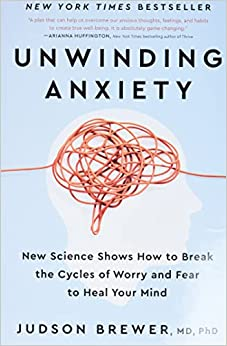

Anxiety - Overview
Occasional anxiety is a normal part of life. Many people worry about things such as health, money, or family problems. But anxiety disorders involve more than temporary worry or fear. For people with an anxiety disorder, the anxiety does not go away and can get worse over time. The symptoms can interfere with daily activities such as job performance, schoolwork, and relationships. There are several types of anxiety disorders, including generalised anxiety disorder, panic disorder, social anxiety disorder, and various phobia-related disorders.
Anxiety - symptoms
Generalized Anxiety Disorder Generalized anxiety disorder (GAD) usually involves a persistent feeling of anxiety or dread, which can interfere with daily life. It is not the same as occasionally worrying about things or experiencing anxiety due to stressful life events. People living with GAD experience frequent anxiety for months, if not years. Symptoms of GAD include: -> Feeling restless, wound-up, or on-edge -> Being easily fatigued -> Having difficulty concentrating -> Being irritable -> Having headaches, muscle aches, stomachaches, or unexplained pains -> Difficulty controlling feelings of worry -> Having sleep problems, such as difficulty falling or staying asleep Panic Disorder People with panic disorder have frequent and unexpected panic attacks. Panic attacks are sudden periods of intense fear, discomfort, or sense of losing control even when there is no clear danger or trigger. Not everyone who experiences a panic attack will develop panic disorder. During a panic attack, a person may experience: -> Pounding or racing heart -> Sweating -> Trembling or tingling -> Chest pain -> Feelings of impending doom -> Feelings of being out of control -> People with panic disorder often worry about when the next attack will happen and actively try to prevent future attacks by avoiding places, situations, or behaviours they associate with panic attacks. Panic attacks can occur as frequently as several times a day or as rarely as a few times a year. Social Anxiety Disorder Social anxiety disorder is an intense, persistent fear of being watched and judged by others. For people with social anxiety disorder, the fear of social situations may feel so intense that it seems beyond their control. For some people, this fear may get in the way of going to work, attending school, or doing everyday things. People with social anxiety disorder may experience: -> Blushing, sweating, or trembling -> Pounding or racing heart -> Stomachaches -> Rigid body posture or speaking with an overly soft voice -> Difficulty making eye contact or being around people they don’t know -> Feelings of self-consciousness or fear that people will judge them negatively Phobia-related disorders A phobia is an intense fear of—or aversion to—specific objects or situations. Although it can be realistic to be anxious in some circumstances, the fear people with phobias feel is out of proportion to the actual danger caused by the situation or object. People with a phobia: -> May have an irrational or excessive worry about encountering the feared object or situation -> Take active steps to avoid the feared object or situation -> Experience immediate intense anxiety upon encountering the feared object or situation -> Endure unavoidable objects and situations with intense anxiety -> There are several types of phobias and phobia-related disorders: Specific Phobias (sometimes called simple phobias): As the name suggests, people who have a specific phobia have an intense fear of, or feel intense anxiety about, specific types of objects or situations. Some examples of specific phobias include the fear of: -> Flying -> Heights -> Specific animals, such as spiders, dogs, or snakes -> Receiving injections -> Blood Social anxiety disorder Social anxiety disorder (previously called social phobia): People with social anxiety disorder have a general intense fear of, or anxiety toward, social or performance situations. They worry that actions or behaviors associated with their anxiety will be negatively evaluated by others, leading them to feel embarrassed. This worry often causes people with social anxiety to avoid social situations. Social anxiety disorder can manifest in a range of situations, such as within the workplace or the school environment. Agoraphobia People with agoraphobia have an intense fear of two or more of the following situations: -> Using public transportation -> Being in open spaces -> Being in enclosed spaces -> Standing in line or being in a crowd -> Being outside of the home alone -> People with agoraphobia often avoid these situations, in part, because they think being able to leave might be difficult or impossible in the event they have panic-like reactions or other embarrassing symptoms. In the most severe form of agoraphobia, an individual can become housebound. Separation anxiety disorder: Separation anxiety is often thought of as something that only children deal with; however, adults can also be diagnosed with separation anxiety disorder. People who have separation anxiety disorder have fears about being parted from people to whom they are attached. They often worry that some sort of harm or something untoward will happen to their attachment figures while they are separated. This fear leads them to avoid being separated from their attachment figures and to avoid being alone. People with separation anxiety may have nightmares about being separated from attachment figures or experience physical symptoms when separation occurs or is anticipated.
Anxiety - Treatment
Treatments and Therapies Anxiety disorders are generally treated with psychotherapy, medication, or both. There are many ways to treat anxiety, and you should work with a health care provider to choose the best treatment for you. Psychotherapy Psychotherapy or “talk therapy” can help people with anxiety disorders. To be effective, psychotherapy must be directed at your specific anxieties and tailored to your needs. Cognitive Behavioral Therapy Cognitive Behavioral Therapy (CBT) is an example of one type of psychotherapy that can help people with anxiety disorders. It teaches people different ways of thinking, behaving, and reacting to situations to help you feel less anxious and fearful. CBT has been well studied and is the gold standard for psychotherapy. Exposure therapy is a CBT method that is used to treat anxiety disorders. Exposure therapy focuses on confronting the fears underlying an anxiety disorder to help people engage in activities they have been avoiding. Exposure therapy is sometimes used along with relaxation exercises. Acceptance and Commitment Therapy Another treatment option for some anxiety disorders is acceptance and commitment therapy (ACT). ACT takes a different approach than CBT to negative thoughts. It uses strategies such as mindfulness and goal setting to reduce discomfort and anxiety. Compared to CBT, ACT is a newer form of psychotherapy treatment, so less data are available on its effectiveness. Medication Medication does not cure anxiety disorders but can help relieve symptoms. Health care providers, such as a psychiatrist or primary care provider, can prescribe medication for anxiety. Some states also allow psychologists who have received specialized training to prescribe psychiatric medications. The most common classes of medications used to combat anxiety disorders are antidepressants, anti-anxiety medications (such as benzodiazepines), and beta-blockers. Antidepressants Antidepressants are used to treat depression, but they can also be helpful for treating anxiety disorders. They may help improve the way your brain uses certain chemicals that control mood or stress. You may need to try several different antidepressant medicines before finding the one that improves your symptoms and has manageable side effects. Antidepressants can take several weeks to start working so it’s important to give the medication a chance before reaching a conclusion about its effectiveness. If you begin taking antidepressants, do not stop taking them without the help of a health care provider. Your provider can help you slowly and safely decrease your dose. Stopping them abruptly can cause withdrawal symptoms. In some cases, children, teenagers, and adults younger than 25 may experience increased suicidal thoughts or behavior when taking antidepressant medications, especially in the first few weeks after starting or when the dose is changed. Because of this, people of all ages taking antidepressants should be watched closely, especially during the first few weeks of treatment. Anti-anxiety Medications Anti-anxiety medications can help reduce the symptoms of anxiety, panic attacks, or extreme fear and worry. The most common anti-anxiety medications are called benzodiazepines. Although benzodiazepines are sometimes used as first-line treatments for generalized anxiety disorder, they have both benefits and drawbacks. Benzodiazepines are effective in relieving anxiety and take effect more quickly than antidepressant medications. However, some people build up a tolerance to these medications and need higher and higher doses to get the same effect. Some people even become dependent on them. To avoid these problems, health care providers usually prescribe benzodiazepines for short periods of time. If people suddenly stop taking benzodiazepines, they may have withdrawal symptoms, or their anxiety may return. Therefore, benzodiazepines should be tapered off slowly. Your provider can help you slowly and safely decrease your dose. Beta-blockers Although beta-blockers are most often used to treat high blood pressure, they can help relieve the physical symptoms of anxiety, such as rapid heartbeat, shaking, trembling, and blushing. These medications can help people keep physical symptoms under control when taken for short periods. They can also be used “as needed” to reduce acute anxiety, including to prevent some predictable forms of performance anxieties. Choosing the Right Medication Some types of drugs may work better for specific types of anxiety disorders, so people should work closely with a health care provider to identify which medication is best for them. Certain substances such as caffeine, some over-the-counter cold medicines, illicit drugs, and herbal supplements may aggravate the symptoms of anxiety disorders or interact with prescribed medication. People should talk with a health care provider, so they can learn which substances are safe and which to avoid. Choosing the right medication, medication dose, and treatment plan should be done under an expert’s care and should be based on a person’s needs and their medical situation. Your and your provider may try several medicines before finding the right one. Support Groups Some people with anxiety disorders might benefit from joining a self-help or support group and sharing their problems and achievements with others. Support groups are available both in person and online. However, any advice you receive from a support group member should be used cautiously and does not replace treatment recommendations from a health care provider. Stress Management Techniques Stress management techniques, such as exercise, mindfulness, and meditation, also can reduce anxiety symptoms and enhance the effects of psychotherapy. You can learn more about how these techniques benefit your treatment by talking with a health care provider
Recommended musics!
These are some recommended music
FOR YOU -Nomabeats

Lofi-vintage by FasSounds
A song that motivates you in an amazing way!
Recommended videos
These are some videos which might help you feel better!
Recommended book
Unwinding Anxiety: New Science Shows How to Break the Cycles of Worry and Fear to Heal Your Mind
